stat_density
Density estimation, 1D
Details
Aesthetics
The following aesthetics can be used with stat_density. They are listed along with their default value. All geoms and scales can also use the group aesthetic. Read how this important aesthetic works in scale_group. Typically, you will associate an aesthetic with a variable in your data set. To do this, you use the aes function: stat_density(aes(x = var)). Scales control the details of the mapping between data and aesthetic properties; after each aesthetic are listed scales that can be used with that aesthetic. The scale documentation will also provide references to help you interpret the default values.
Instead of mapping an aesthetic to a variable in your dataset, you can also set it to a fixed value. See the parameters section for details.
y:
..density..(scales: continuous, date, discrete, pow, prob)
New variables produced by the statistic
To use these variables in an aesthetic mapping, you need to surrond them with .., like aes(x = ..output..).
y, density estimatescaled, density estimate, scaled to maximum of 1
Parameters
When an aesthetic is used an a parameter, like stat_density(adjust = 3), it will override mappings from data.
adjust, see \code{\link{density}} for detailskernel, kernel used for density estimation, see \code{\link{density}} for detailstrim, NULL
Default geom
geom_area. Override with the geom argument: stat_density(geom="point").
See also
- stat_bin: for the histogram
- density: for details of the algorithm used
Examples
> m <- ggplot(movies, aes(x=rating)) > m + stat_density() > > # Adjust parameters > m + stat_density(kernel = "rectangular") 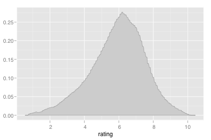 > m + stat_density(kernel = "biweight") > m + stat_density(kernel = "epanechnikov") 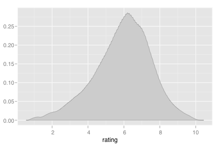 > m + stat_density(adjust=1/5) 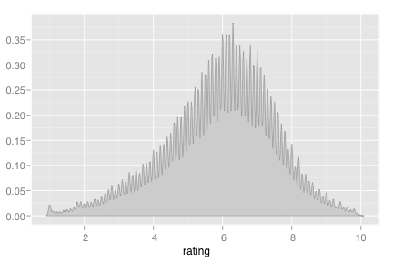 # Very rough > m + stat_density(adjust=5) 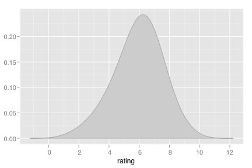 # Very smooth > > # Adjust aesthetics > m + stat_density(aes(colour=factor(Drama)), size=2, fill=NA)> # Scale so peaks have same height: > m + stat_density(aes(colour=factor(Drama), y = ..scaled..), size=2, fill=NA) 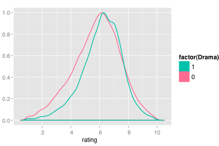 > > m + stat_density(colour="darkgreen", size=2) 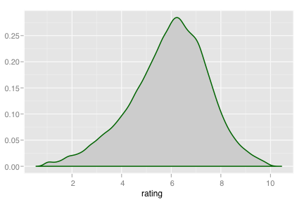 > m + stat_density(colour="darkgreen", size=2, fill=NA) 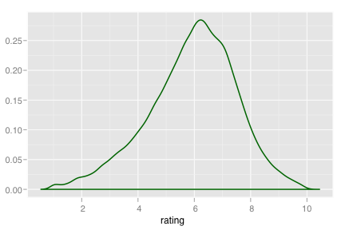 > m + stat_density(colour="darkgreen", size=2, fill="green") 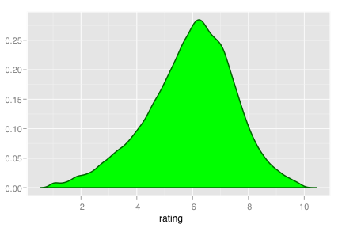 > > # Change scales > (m <- ggplot(movies, aes(x=votes)) + stat_density(trim = TRUE)) 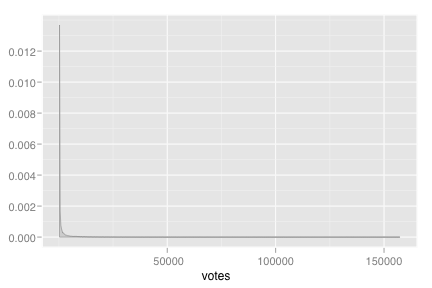 > m + scale_x_log10() 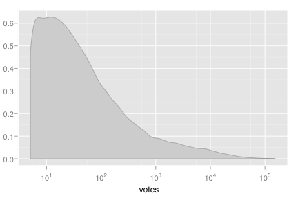 > m + coord_trans(x="log10") 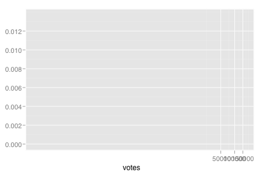 > m + scale_x_log10() + coord_trans(x="log10") 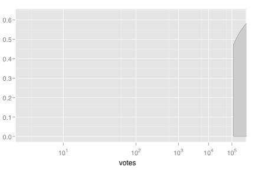 > > # Also useful with > m + stat_bin() 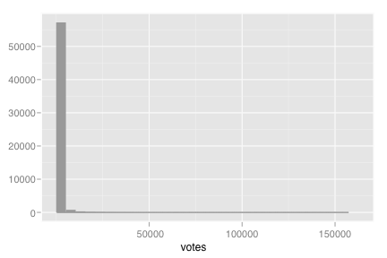 > > # Need to be careful with weighted data > m <- ggplot(movies, aes(x=rating, weight=votes)) > m + geom_histogram(aes(y = ..count..)) + stat_density(fill=NA) 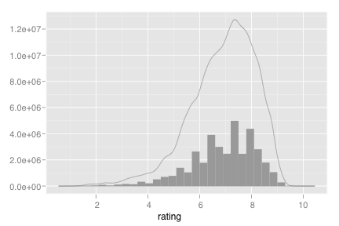 > > m <- ggplot(movies, aes(x=rating, weight=votes/sum(votes))) > m + geom_histogram(aes(y=..density..)) + stat_density(fill=NA, colour="black") 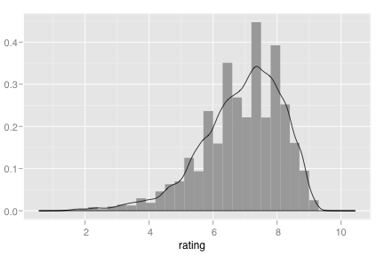 > > movies$decade <- round_any(movies$year, 10) > m <- ggplot(movies, aes(x=rating, colour=decade, group=decade)) > m + stat_density(fill=NA) 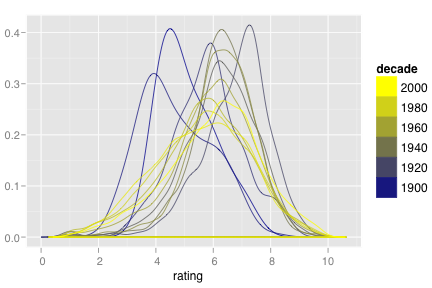 > > # Use qplot instead > qplot(length, data=movies, geom="density", weight=rating) 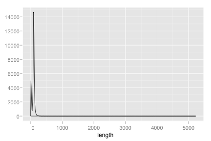 > qplot(length, data=movies, geom="density", weight=rating/sum(rating)) 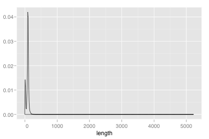